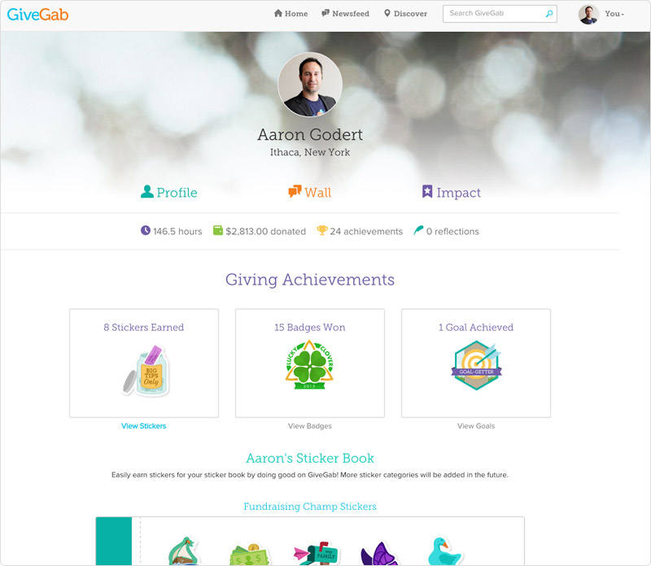
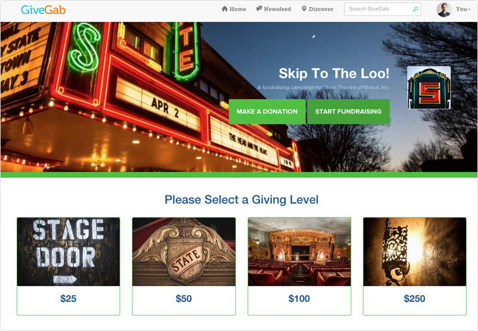
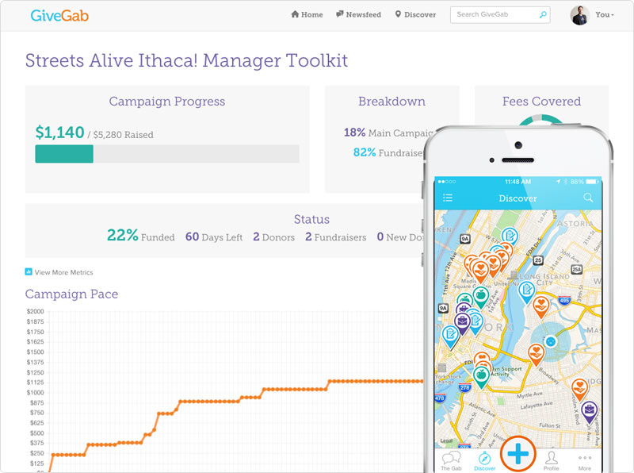

Social Giving App Running on Heroku Drives Long-Term Engagement for Nonprofits
GiveGab connects donors and volunteers to giving opportunities and to each other
Raise more. Engage more. Do more. Such is the rallying cry of nonprofits across the country as they strive to increase their supporter base and make a greater impact for their cause. Nonprofits rely heavily on donors and volunteers, not only through their direct contributions, but also through their advocacy and even evangelism. Such organizations hope to inspire their supporters to become ambassadors for their cause, helping them raise awareness as well as recruit new supporters within their social circles. Volunteers may be eager to give back, but the opportunity to track their impact and share their passion with friends can make the experience even more meaningful.
The founders of GiveGab understood how social engagement could impact donor and volunteer engagement by enriching and personalizing a supporter’s experience. And they understood that adding a little fun into the mix could truly cultivate long-term, loyal supporters for local non-profits. In 2011, they launched the GiveGab platform to enable a social network for volunteers, offering a single-sign on hub for the philanthropic aspect of their lives. In 2014, they added comprehensive fundraising solutions for nonprofits to complement the volunteering features. The end result is a robust SaaS platform where nonprofits can run all of their online operations in a beautifully branded environment.
A One-Stop Destination for Giving
For volunteers, the GiveGab platform offers news from their favorite nonprofits and matches them with new organizations based their interest or skills. They can see where their friends are volunteering, recruit friends to volunteer with them, and even run their own campaign for their favorite cause. GiveGab lets volunteers build a “volunteer resume” to help them share their experience and communicate their philanthropic activities with schools or future employers. Gamification features help make their experience even more fun.

For non-profits, GiveGab provides a full-service platform for administering their volunteer and donation programs. Not only can they post opportunities on their own branded page, but they can track participation, communicate with their base, recruit fundraisers and help them run peer-to-peer campaigns.
The GiveGab platform enables another layer of social giving for groups, such as schools, businesses, or government agencies. Such organizations can set up volunteer activities for their people, track their participation, and further their social responsibility goals. GiveGab even helps them communicate their impact to stakeholders by providing easy access to statistics and details regarding their volunteer activities.
Growing Giving On Heroku
The GiveGab founders launched their app on Heroku in 2011. They had originally looked at other hosting solutions, including AWS and Engine Yard, but their development partner had recommended Heroku for it’s flexibility, scalability, and ease of use. The founders were able to get their product up and running quickly, while keeping their team lean and expenses contained.
For us, using Heroku is a no-brainer. We could have gone straight to AWS but it would have meant hiring DevOps resources to manage the underlying platform, scripting, and automation.
Aaron Godert, CTO and Co-Founder at GiveGab
The GiveGab team has been happy to stay on the platform ever since launch, and although there are now a lot of cloud hosting solutions out there, they’ve not seen anything better than Heroku. They especially love how Heroku is continually iterating and adding value to the platform, which has benefited their product and development process over the years.

When it comes to testing and deployment, the engineering team automates processes wherever possible and they greatly appreciate Heroku’s ability to support this approach. For QA they can easily spin up satellite environments on Heroku to test a particular issue or user story, and then merge the code into the master for deployment at any time.
We’re constantly provisioning and de-provisioning environments as part of our workflow which allows us to be incredibly efficient and really accelerates development and deployment of new features.
Aaron Godert, CTO and Co-Founder at GiveGab
The GiveGab developers used Ruby on Rails with some Node.js and JRuby to build their main web app as well as a production API that supports their native iOS app – all tied to a high-availability Heroku Postgres server. With their focus on automation, they looked to the Heroku Add-ons Marketplace for tools that could help streamline their process. They use Adept Scale to automate scaling dynos, Adminium for data insights, DbInsights for business intelligence and analytics, Honeybadger for Ruby on Rails monitoring, New Relic APM to monitor and tune their app, openredis to host their Redis instance, PointDNS for DNS management, SSL encryption, and CircleCI to run their test suite.
Now that we have more usage, the ability for us to elastically scale has been great. We’ve been able to use Heroku Add-ons help us be more efficient and automate many of our app management tasks.
Aaron Godert, CTO and Co-Founder at GiveGab
App Experience
The GiveGab app is tuned towards discovering volunteer opportunities within local communities. Users only have to register once and create a profile that they can grow into a rich record of their philanthropic activity over a lifetime. Through the platform, users can sign up for membership to non-profits and get involved in activities or receive the latest news. After participating, they can track their impact to the nonprofit’s cause, as well as report on their activities by posting blogs, images and videos. Social features let them recruit volunteer friends and contribute to the voice of a particular non-profit community of volunteers. Game-like features, such as leaderboards, badges, achievements, and ‘sticker books’ presented within a beautifully rich user interface add the secret sauce of simple fun throughout the GiveGab experience.

Nonprofits enjoy a full-featured administration tool to manage their volunteer and fundraising activities, including unlimited volunteer opportunities and event-based or peer-to-peer campaigns. They can create a branded page or customized campaign communications so that supporters feel like they are interacting with the non-profit directly rather than through an intermediary platform.
On October 24, 2015, GiveGab will launch its first state-wide “Day of Giving” in Mississippi where they hope to raise $15m through 100+k transactions on that day. The team has full confidence that Heroku can support such a tsunami of activity within only a few hours. On that day, Mississippians will certainly raise more, engage more, and do more for their local communities.
More Stories


Have a question? Give our sales team a call: +1 (866) 278-1349.